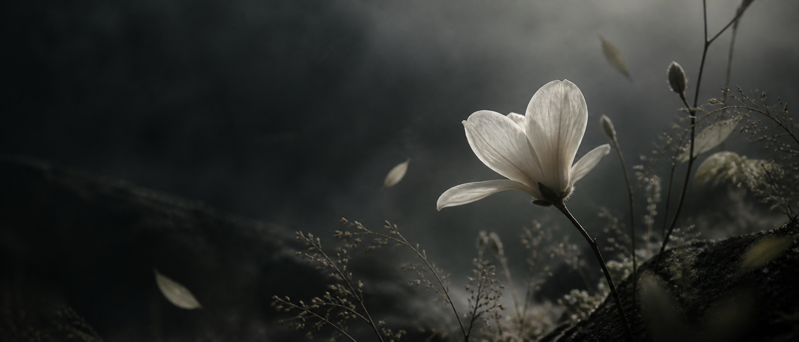

HAOLING FENG
INDEPENDENT DESIGNER
初入设计，始终保持好奇。
在学习中探索，在细节中打磨，认真对待每一次创作。
冯 皓龄 ALWAYS LEARNING, ALWAYS MAKING.
SELECTED EXPLORATIONS 设计探索
概念示例 · 待替换为个人作品

INDEPENDENT DESIGNER
初入设计，始终保持好奇。
在学习中探索，在细节中打磨，认真对待每一次创作。
冯 皓龄 ALWAYS LEARNING, ALWAYS MAKING.
概念示例 · 待替换为个人作品
